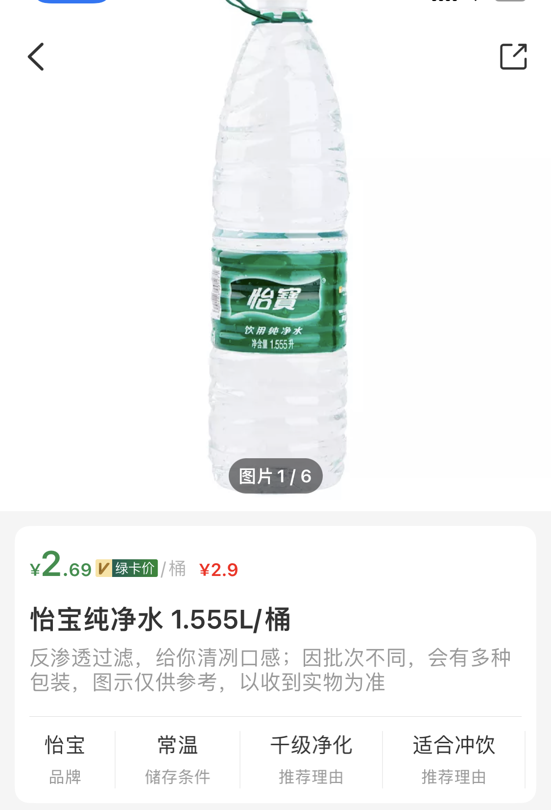
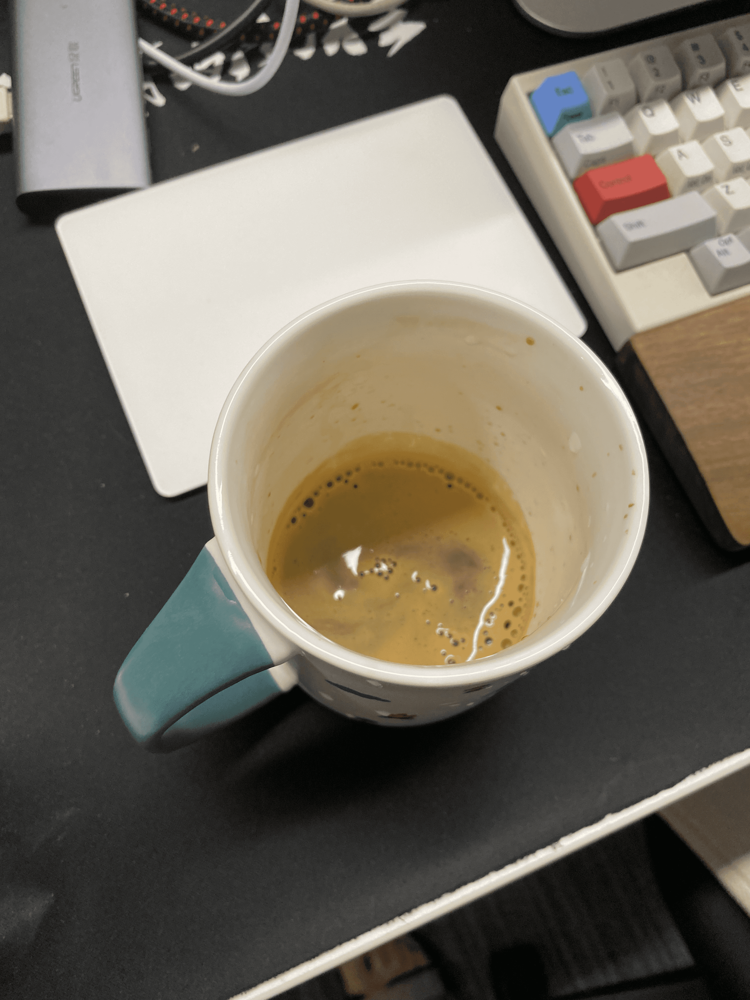
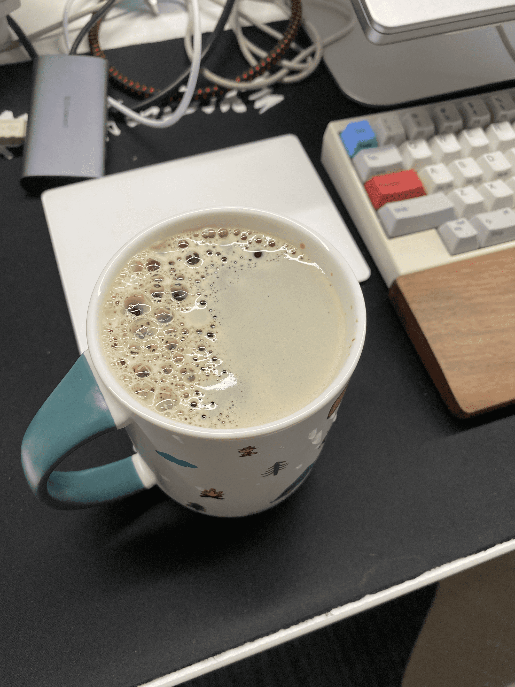

我习惯在思考的间隙或者做完一整块工作后喝水，但之前一直不知道自己一天会喝多少水，经常会因为喝水太多导致半夜被尿憋醒上厕所，从而影响睡眠。我曾经还给自己立了一个原则：下午 6 点后不要再喝水，发现效果不大，晚上该去厕所还是要去，后来改成 5 点后不要喝水效果也不太大，我觉得根源是其他时间喝水量太多了。
最近我自创了一个方法来量化我的喝水量，已经尝试了两周，效果很不错，而且比较简单、易操作，我定期用叮咚买菜购买 4-5 桶怡宝 1.555 升装的纯净水，每天就定量喝这一桶水。因为我平时都在有空调的环境中办公，而且也没有特别大的运动消耗，所以 1.555 升是个比较合理的量。而且这个水的价格也并不贵，每天不到 3 块钱花在喝水上很值，并且因为有了这个水，我就不会再去买其他饮料了，反而节省了一笔开支。

之前早上到公司后我会吃个凉的水煮蛋并喝一杯水，吃完之后八成会拉肚子，我曾怀疑是因为没喝热水所以才拉肚子，但换成热水还是如此。最近两周刚好没有再吃煮鸡蛋，水也换成了纯净水，反而不拉肚子了。但我这里没有控制好变量，两个变量（凉鸡蛋、水）都变了所以其实不太好说是哪里的问题，但我觉得不太可能是公司水质问题，应该就是凉鸡蛋导致的，如果是水的问题，其他人应该也会有拉肚子的情况。况且公司的水使用的商用的滤水装置，定期检查，不会有什么问题。
我在喝怡宝这个水时确实喝出了甘冽都口感，这种口感会让我心情愉悦起来。我现在每天早上到公司后，会先用公司的咖啡机接一份意式浓缩（之前是直接接美式），然后兑上怡宝的纯净水，口感会好很多，也会好喝很多。


P.S. 通过图片可以看出，我司的咖啡豆还是不错的，油脂很丰富。
经过两周的观察，我发现我一上午能喝掉将近三分之二的水，照这么来看之前下午喝的会比这个量还大，远远超过 1.555 升，估计接近 2.5 升了。
下边是我这几天的战果：

施行这种量化方式后，最近一段时间半夜没有再上过厕所了。